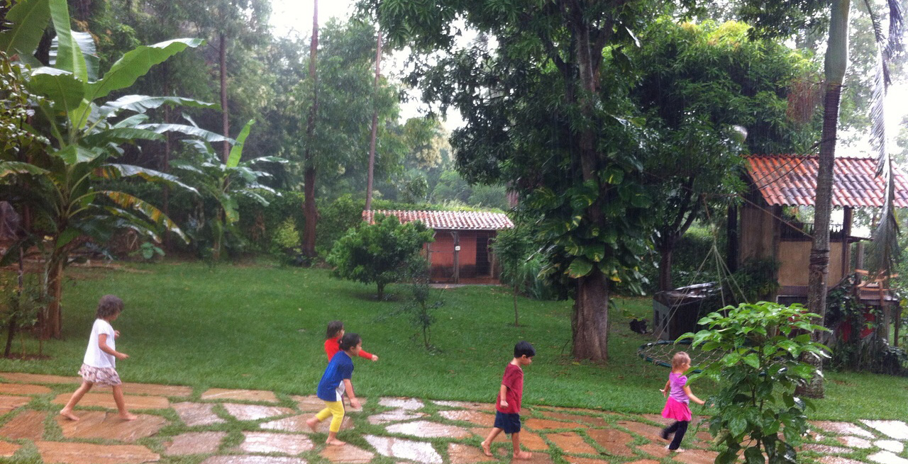

O Jardim Aurora é uma iniciativa de professores e famílias com objetivo de consolidar um espaço de vivência infantil que valorize a autonomia, a alimentação natural, a brincadeira espontânea e o contato com a natureza.
É na primeira infância, até os 7 anos, que se formam as bases do desenvolvimento humano. Em um ambiente acolhedor e preparado, a criança se sente confiante e respeitada.
Acreditamos que o espaço da escola no primeiro setênio de vida deve remeter ao aconchego do lar e é nesse sentido que pensamos o nosso espaço.
Com amplo quintal cheio de árvores, horta, brinquedos de materiais naturais, procuramos estruturar a escola de modo a proporcionar vivências sociais e lúdicas relacionadas ao dia a dia da criança. Em nossa rotina temos atividades de culinária, aquarela, jardinagem, brincadeiras, contação de histórias.
Nossa alimentação é saudável e integral, elaborada preferencialmente com alimentos orgânicos, não-industrializados e não-transgênicos. Temos como parâmetro uma mandala de alimentos, própria da pedagogia Waldorf e todas as crianças comem juntas o mesmo alimento.
Por isso, o cardápio é pensado de modo que todos possam comer, considerando restrições, intolerâncias e alergias.
A escola possui uma turma matutina e outra vespertina, e recebe crianças de 1 ano e 8 meses a 6 anos.
Horário de funcionamento:
turno matutino: 8h às 12h
turno vespertino: 14h às 18h